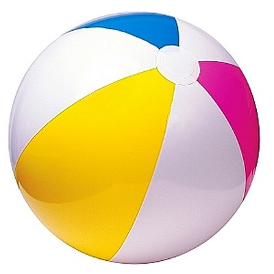

Dit is de eerste paragraaf en zoals je ziet kan er een aardige lap tekst in. Het maakt niet uit hoe lang je de tekst hierbinnen maakt, de paragraaf groeit gewoon mee. Je zult zometeen zien dat als we er nog een paragraaf onder plaatsen er een regeltje witruimte tussen de twee paragrafen komt te staan. Dit is om het lezen makkelijker te maken.
Dit is de tweede paragraaf en zoals je ziet kan er een aardige lap tekst in. Het maakt niet uit hoe lang je de tekst hierbinnen maakt, de paragraaf groeit gewoon mee. Zoals je ziet zit er een extra regeltje ruimte tussen deze twee paragrafen.

Dit is een blauw woordje, terwijl dit woordje rood is!. Je kunt ook woorden dik of schuin maken.
| Naam | Gewonnen (keer) |
|---|---|
| Tiemen | 7 |
| Chris | 5 |